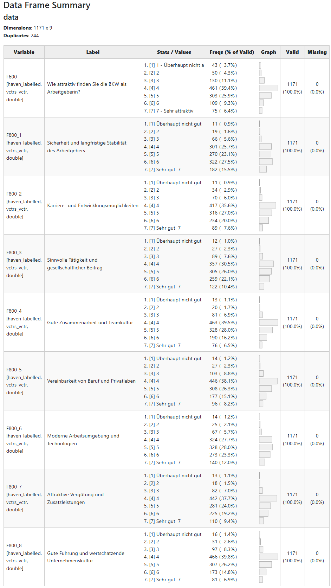
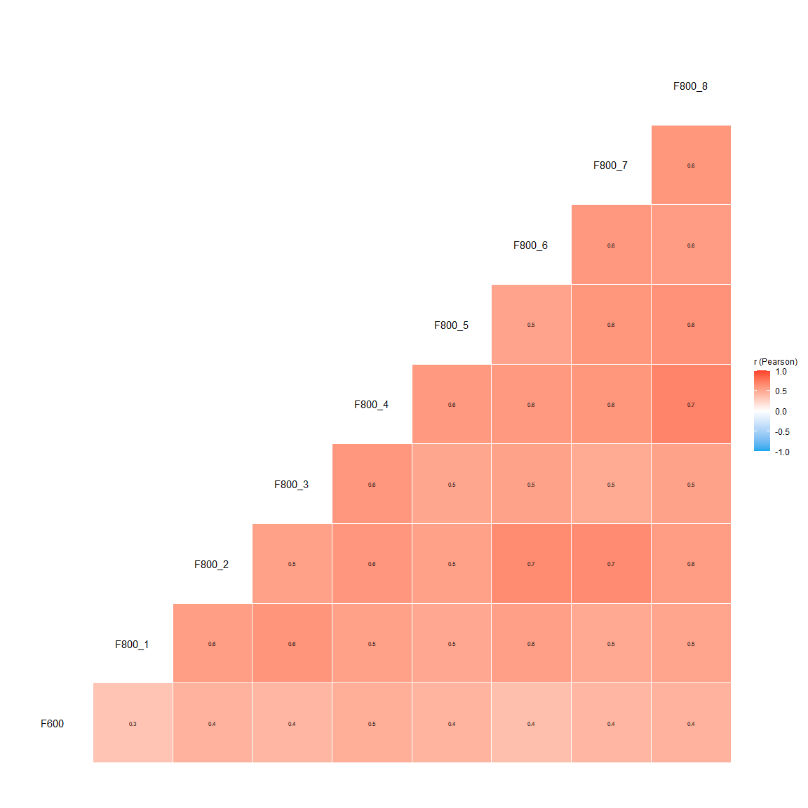

The goal of YouAnalyser is to provide Analytics Partners of YouGov DACH with a convenient and standardized way to perform core analyses on survey data, such as Key Driver Analysis (KDA). The package includes functions for data preprocessing, exploratory data analysis (EDA), and KDA (more to come), all designed to work seamlessly with survey data in the haven::labelled() format. By using YouAnalyser, you can save time and ensure consistency in your analyses across different projects.
Installation and Setup
You can install the development version of YouAnalyser from GitHub with:
# install.packages("pak")
pak::pak("EGuizarRosales/YouAnalyser")Then, in your scripts, use:
library(YouAnalyser)
#>
#> ── Welcome to YouAnalyser! ─────────────────────────────────────────────────────
#> ✔ Package loaded successfully!
#> Type `?YouAnalyser` to see the documentation.
#> Visit the package's website for more information:
#> <https://eguizarrosales.github.io/YouAnalyser/>
library(haven)Some general Tips:
- You can find the documentation for each function by calling
?function_namein your R console (e.g.,?eda_summary). - This package is documented with vignettes. You can browse the available vignettes with
browseVignettes("YouAnalyser")and open a specific vignette withvignette("vignette_name", package = "YouAnalyser"). - The most convenient way to access the full documentation of this package is through the website: https://eguizarrosales.github.io/YouAnalyser/.
1. Data Processing, Convenience Functions, and Example Data
All data processing functions start with the prefix dp_, while convenience functions start with the prefix ya_. For a detailed walkthrough of the data processing functions, please refer to the vignette included in the package (use e.g. vignette("dp", package = "YouAnalyser")), which provide step-by-step guides on how to use the various functions for data processing and other convenient tasks.
YouAnalyser assumes that your data comes in the haven::labelled() format, which is common for survey data. The package includes functions to help you process and prepare your data for analysis if your data is not already in this format:
-
dp_copy_codebook_template(): Copy a codebook template to a specified file path -
dp_convert_to_labelled(): Convert a data frame to a labelled data frame using a codebook. -
dp_inspect_codebook(): Inspect the codebook of a labelled data frame (useful to check whether labelling worked as expected)
The convenience functions starting with ya_ mostly take care of selecting files, defining file names, and saving plots:
-
ya_choose_file(): Choose an existing file and return its path -
ya_choose_file_path(): Choose an existing directory and define a new file in this directory, returning the full file path -
ya_save_plot(): Save a plot to JPEG
Special consideration should be given to ya_setup_folder_structure(), which creates a standardized folder structure for your project. This function is designed to help you organize your files and outputs in a consistent way across different projects. By default, it creates the following folder structure:
├── 01_input
│ └── data
│ ├── processed
│ └── raw
├── 02_scripts
├── 03_output
│ ├── data
│ ├── plots
│ └── reports
├── Project2.Rproj
└── RThe ya_setup_folder_structure() function is used in workflows. See vignette("kda", package = "YouAnalyser") for an example of how to use it in a workflow.
2. Exploratory Data Analysis (EDA)
All EDA functions start with the prefix eda_. For a detailed walkthrough of the EDA functions, please refer to the vignettes included in the package (use e.g. vignette("eda", package = "YouAnalyser")), which provide step-by-step guides on how to use the various functions for EDA.
There are two basic functions for EDA in the YouAnalyser package: eda_summary() and eda_correlation(). The former provides a summary of the data, including descriptive statistics and missing values, while the latter calculates and visualizes correlations between variables.
eda_summary(
data = bkw_processed,
variables = c("F600", paste0("F800_", 1:8)),
console_output = TRUE,
browser_output = FALSE
)
#>
#> ── Data Frame Summary
#> Data Frame Summary
#> data
#> Dimensions: 1171 x 9
#> Duplicates: 244
#>
#> --------------------------------------------------------------------------------------------------------------------------------------------------
#> Variable Label Stats / Values Freqs (% of Valid) Graph Valid Missing
#> ------------------ ------------------------------------------ ------------------------------ -------------------- ----------- ---------- ---------
#> F600 Wie attraktiv finden Sie die BKW als 1. [1] 1 - Überhaupt nicht a 43 ( 3.7%) 1171 0
#> [haven_labelled, Arbeitgeberin? 2. [2] 2 50 ( 4.3%) (100.0%) (0.0%)
#> vctrs_vctr, 3. [3] 3 130 (11.1%) II
#> double] 4. [4] 4 461 (39.4%) IIIIIII
#> 5. [5] 5 303 (25.9%) IIIII
#> 6. [6] 6 109 ( 9.3%) I
#> 7. [7] 7 - Sehr attraktiv 75 ( 6.4%) I
#>
#> F800_1 Sicherheit und langfristige Stabilität 1. [1] Überhaupt nicht gut 11 ( 0.9%) 1171 0
#> [haven_labelled, des Arbeitgebers 2. [2] 2 19 ( 1.6%) (100.0%) (0.0%)
#> vctrs_vctr, 3. [3] 3 66 ( 5.6%) I
#> double] 4. [4] 4 301 (25.7%) IIIII
#> 5. [5] 5 270 (23.1%) IIII
#> 6. [6] 6 322 (27.5%) IIIII
#> 7. [7] Sehr gut 7 182 (15.5%) III
#>
#> F800_2 Karriere- und Entwicklungsmöglichkeiten 1. [1] Überhaupt nicht gut 11 ( 0.9%) 1171 0
#> [haven_labelled, 2. [2] 2 34 ( 2.9%) (100.0%) (0.0%)
#> vctrs_vctr, 3. [3] 3 70 ( 6.0%) I
#> double] 4. [4] 4 417 (35.6%) IIIIIII
#> 5. [5] 5 316 (27.0%) IIIII
#> 6. [6] 6 234 (20.0%) III
#> 7. [7] Sehr gut 7 89 ( 7.6%) I
#>
#> F800_3 Sinnvolle Tätigkeit und 1. [1] Überhaupt nicht gut 12 ( 1.0%) 1171 0
#> [haven_labelled, gesellschaftlicher Beitrag 2. [2] 2 27 ( 2.3%) (100.0%) (0.0%)
#> vctrs_vctr, 3. [3] 3 89 ( 7.6%) I
#> double] 4. [4] 4 357 (30.5%) IIIIII
#> 5. [5] 5 305 (26.0%) IIIII
#> 6. [6] 6 259 (22.1%) IIII
#> 7. [7] Sehr gut 7 122 (10.4%) II
#>
#> F800_4 Gute Zusammenarbeit und Teamkultur 1. [1] Überhaupt nicht gut 13 ( 1.1%) 1171 0
#> [haven_labelled, 2. [2] 2 20 ( 1.7%) (100.0%) (0.0%)
#> vctrs_vctr, 3. [3] 3 81 ( 6.9%) I
#> double] 4. [4] 4 463 (39.5%) IIIIIII
#> 5. [5] 5 328 (28.0%) IIIII
#> 6. [6] 6 190 (16.2%) III
#> 7. [7] Sehr gut 7 76 ( 6.5%) I
#>
#> F800_5 Vereinbarkeit von Beruf und Privatleben 1. [1] Überhaupt nicht gut 14 ( 1.2%) 1171 0
#> [haven_labelled, 2. [2] 2 27 ( 2.3%) (100.0%) (0.0%)
#> vctrs_vctr, 3. [3] 3 103 ( 8.8%) I
#> double] 4. [4] 4 446 (38.1%) IIIIIII
#> 5. [5] 5 308 (26.3%) IIIII
#> 6. [6] 6 177 (15.1%) III
#> 7. [7] Sehr gut 7 96 ( 8.2%) I
#>
#> F800_6 Moderne Arbeitsumgebung und Technologien 1. [1] Überhaupt nicht gut 14 ( 1.2%) 1171 0
#> [haven_labelled, 2. [2] 2 25 ( 2.1%) (100.0%) (0.0%)
#> vctrs_vctr, 3. [3] 3 67 ( 5.7%) I
#> double] 4. [4] 4 324 (27.7%) IIIII
#> 5. [5] 5 328 (28.0%) IIIII
#> 6. [6] 6 273 (23.3%) IIII
#> 7. [7] Sehr gut 7 140 (12.0%) II
#>
#> F800_7 Attraktive Vergütung und 1. [1] Überhaupt nicht gut 13 ( 1.1%) 1171 0
#> [haven_labelled, Zusatzleistungen 2. [2] 2 18 ( 1.5%) (100.0%) (0.0%)
#> vctrs_vctr, 3. [3] 3 82 ( 7.0%) I
#> double] 4. [4] 4 442 (37.7%) IIIIIII
#> 5. [5] 5 281 (24.0%) IIII
#> 6. [6] 6 225 (19.2%) III
#> 7. [7] Sehr gut 7 110 ( 9.4%) I
#>
#> F800_8 Gute Führung und wertschätzende 1. [1] Überhaupt nicht gut 16 ( 1.4%) 1171 0
#> [haven_labelled, Unternehmenskultur 2. [2] 2 31 ( 2.6%) (100.0%) (0.0%)
#> vctrs_vctr, 3. [3] 3 97 ( 8.3%) I
#> double] 4. [4] 4 466 (39.8%) IIIIIII
#> 5. [5] 5 307 (26.2%) IIIII
#> 6. [6] 6 173 (14.8%) II
#> 7. [7] Sehr gut 7 81 ( 6.9%) I
#> --------------------------------------------------------------------------------------------------------------------------------------------------
#>
#> ── Descriptive Statistics
#> Variable | Mean | SD | Range | Quartiles | Skewness | Kurtosis | n | n_Missing
#> -------------------------------------------------------------------------------------------
#> F600 | 4.33 | 1.31 | [1.00, 7.00] | 4.00, 5.00 | -0.20 | 0.48 | 1171 | 0
#> F800_1 | 5.13 | 1.29 | [1.00, 7.00] | 4.00, 6.00 | -0.41 | -0.11 | 1171 | 0
#> F800_2 | 4.75 | 1.20 | [1.00, 7.00] | 4.00, 6.00 | -0.18 | 0.16 | 1171 | 0
#> F800_3 | 4.86 | 1.27 | [1.00, 7.00] | 4.00, 6.00 | -0.23 | -0.08 | 1171 | 0
#> F800_4 | 4.66 | 1.15 | [1.00, 7.00] | 4.00, 5.00 | -0.05 | 0.45 | 1171 | 0
#> F800_5 | 4.64 | 1.22 | [1.00, 7.00] | 4.00, 5.00 | -0.01 | 0.19 | 1171 | 0
#> F800_6 | 4.97 | 1.27 | [1.00, 7.00] | 4.00, 6.00 | -0.37 | 0.14 | 1171 | 0
#> F800_7 | 4.77 | 1.22 | [1.00, 7.00] | 4.00, 6.00 | -0.05 | 0.04 | 1171 | 0
#> F800_8 | 4.59 | 1.20 | [1.00, 7.00] | 4.00, 5.00 | -0.06 | 0.36 | 1171 | 0By setting browser_output = TRUE, the output will be displayed in your default web browser, which can be more convenient for exploring large tables and visualizations. The result will look like this:

You can request a correlation matrix for a set of variables using the eda_correlation() function:
eda_corrs <- eda_correlation(
data = bkw_processed,
variables = c("F600", paste0("F800_", 1:8)),
correlation_type = "Pearson"
)
print(eda_corrs$d)
#> # Correlation Matrix (Pearson-method)
#>
#> Parameter1 | Parameter2 | r | 95% CI | t(1169) | p
#> -------------------------------------------------------------------
#> F600 | F800_1 | 0.34 | [0.29, 0.39] | 12.43 | < .001***
#> F600 | F800_2 | 0.44 | [0.39, 0.48] | 16.68 | < .001***
#> F600 | F800_3 | 0.41 | [0.37, 0.46] | 15.58 | < .001***
#> F600 | F800_4 | 0.47 | [0.42, 0.51] | 18.21 | < .001***
#> F600 | F800_5 | 0.43 | [0.38, 0.48] | 16.36 | < .001***
#> F600 | F800_6 | 0.37 | [0.32, 0.42] | 13.58 | < .001***
#> F600 | F800_7 | 0.42 | [0.37, 0.46] | 15.66 | < .001***
#> F600 | F800_8 | 0.45 | [0.40, 0.49] | 17.12 | < .001***
#> F800_1 | F800_2 | 0.56 | [0.52, 0.60] | 23.25 | < .001***
#> F800_1 | F800_3 | 0.61 | [0.57, 0.64] | 26.16 | < .001***
#> F800_1 | F800_4 | 0.54 | [0.50, 0.58] | 21.99 | < .001***
#> F800_1 | F800_5 | 0.51 | [0.46, 0.55] | 20.13 | < .001***
#> F800_1 | F800_6 | 0.55 | [0.51, 0.59] | 22.57 | < .001***
#> F800_1 | F800_7 | 0.50 | [0.45, 0.54] | 19.69 | < .001***
#> F800_1 | F800_8 | 0.52 | [0.48, 0.56] | 20.91 | < .001***
#> F800_2 | F800_3 | 0.54 | [0.50, 0.58] | 21.98 | < .001***
#> F800_2 | F800_4 | 0.60 | [0.56, 0.63] | 25.57 | < .001***
#> F800_2 | F800_5 | 0.54 | [0.50, 0.58] | 22.11 | < .001***
#> F800_2 | F800_6 | 0.66 | [0.62, 0.69] | 29.66 | < .001***
#> F800_2 | F800_7 | 0.65 | [0.62, 0.68] | 29.49 | < .001***
#> F800_2 | F800_8 | 0.56 | [0.52, 0.60] | 23.31 | < .001***
#> F800_3 | F800_4 | 0.59 | [0.56, 0.63] | 25.26 | < .001***
#> F800_3 | F800_5 | 0.51 | [0.47, 0.55] | 20.33 | < .001***
#> F800_3 | F800_6 | 0.53 | [0.49, 0.57] | 21.62 | < .001***
#> F800_3 | F800_7 | 0.49 | [0.44, 0.53] | 19.04 | < .001***
#> F800_3 | F800_8 | 0.54 | [0.49, 0.57] | 21.67 | < .001***
#> F800_4 | F800_5 | 0.58 | [0.54, 0.62] | 24.52 | < .001***
#> F800_4 | F800_6 | 0.58 | [0.55, 0.62] | 24.65 | < .001***
#> F800_4 | F800_7 | 0.60 | [0.56, 0.63] | 25.44 | < .001***
#> F800_4 | F800_8 | 0.70 | [0.67, 0.73] | 33.43 | < .001***
#> F800_5 | F800_6 | 0.53 | [0.49, 0.57] | 21.29 | < .001***
#> F800_5 | F800_7 | 0.60 | [0.56, 0.63] | 25.50 | < .001***
#> F800_5 | F800_8 | 0.62 | [0.59, 0.66] | 27.27 | < .001***
#> F800_6 | F800_7 | 0.59 | [0.55, 0.63] | 24.93 | < .001***
#> F800_6 | F800_8 | 0.57 | [0.53, 0.61] | 23.75 | < .001***
#> F800_7 | F800_8 | 0.60 | [0.56, 0.63] | 25.48 | < .001***
#>
#> p-value adjustment method: Holm (1979)
#> Observations: 1171
print(eda_corrs$p)
There are many more options for correlation_type. To see all available options, call ?correlation::correlation and read the details section.
3. Key Driver Analysis (KDA)
All KDA functions start with the prefix kda_. For a detailed walkthrough of the KDA functions, please refer to the vignettes included in the package (use e.g. vignette("kda", package = "YouAnalyser")), which provide step-by-step guides on how to use the various functions for KDA.
This is a basic example which shows you how to conduct a End-2-End Key Driver Analysis using the YouAnalyser package. For a more detailed walkthrough, please refer to the vignettes included in the package (use e.g. vignette("kda", package = "YouAnalyser")), which provide step-by-step guides on how to use the various functions for KDA.
res <- kda_regression(
data = bkw_processed,
outcome = "F600",
predictors = paste0("F800_", 1:8),
diagnostics = TRUE,
importance_method = "auto"
)
#> | | | 0% | |= | 1% | |= | 2% | |== | 2% | |== | 3% | |== | 4% | |=== | 4% | |=== | 5% | |==== | 5% | |==== | 6% | |===== | 7% | |===== | 8% | |====== | 8% | |====== | 9% | |======= | 9% | |======= | 10% | |======= | 11% | |======== | 11% | |======== | 12% | |========= | 12% | |========= | 13% | |========== | 14% | |========== | 15% | |=========== | 15% | |=========== | 16% | |============ | 16% | |============ | 17% | |============ | 18% | |============= | 18% | |============= | 19% | |============== | 20% | |=============== | 21% | |=============== | 22% | |================ | 22% | |================ | 23% | |================ | 24% | |================= | 24% | |================= | 25% | |================== | 25% | |================== | 26% | |=================== | 27% | |=================== | 28% | |==================== | 28% | |==================== | 29% | |===================== | 29% | |===================== | 30% | |===================== | 31% | |====================== | 31% | |====================== | 32% | |======================= | 32% | |======================= | 33% | |======================== | 34% | |======================== | 35% | |========================= | 35% | |========================= | 36% | |========================== | 36% | |========================== | 37% | |========================== | 38% | |=========================== | 38% | |=========================== | 39% | |============================ | 40% | |============================= | 41% | |============================= | 42% | |============================== | 42% | |============================== | 43% | |============================== | 44% | |=============================== | 44% | |=============================== | 45% | |================================ | 45% | |================================ | 46% | |================================= | 47% | |================================= | 48% | |================================== | 48% | |================================== | 49% | |=================================== | 49% | |=================================== | 50% | |=================================== | 51% | |==================================== | 51% | |==================================== | 52% | |===================================== | 52% | |===================================== | 53% | |====================================== | 54% | |====================================== | 55% | |======================================= | 55% | |======================================= | 56% | |======================================== | 56% | |======================================== | 57% | |======================================== | 58% | |========================================= | 58% | |========================================= | 59% | |========================================== | 60% | |=========================================== | 61% | |=========================================== | 62% | |============================================ | 62% | |============================================ | 63% | |============================================ | 64% | |============================================= | 64% | |============================================= | 65% | |============================================== | 65% | |============================================== | 66% | |=============================================== | 67% | |=============================================== | 68% | |================================================ | 68% | |================================================ | 69% | |================================================= | 69% | |================================================= | 70% | |================================================= | 71% | |================================================== | 71% | |================================================== | 72% | |=================================================== | 72% | |=================================================== | 73% | |==================================================== | 74% | |==================================================== | 75% | |===================================================== | 75% | |===================================================== | 76% | |====================================================== | 76% | |====================================================== | 77% | |====================================================== | 78% | |======================================================= | 78% | |======================================================= | 79% | |======================================================== | 80% | |========================================================= | 81% | |========================================================= | 82% | |========================================================== | 82% | |========================================================== | 83% | |========================================================== | 84% | |=========================================================== | 84% | |=========================================================== | 85% | |============================================================ | 85% | |============================================================ | 86% | |============================================================= | 87% | |============================================================= | 88% | |============================================================== | 88% | |============================================================== | 89% | |=============================================================== | 89% | |=============================================================== | 90% | |=============================================================== | 91% | |================================================================ | 91% | |================================================================ | 92% | |================================================================= | 92% | |================================================================= | 93% | |================================================================== | 94% | |================================================================== | 95% | |=================================================================== | 95% | |=================================================================== | 96% | |==================================================================== | 96% | |==================================================================== | 97% | |==================================================================== | 98% | |===================================================================== | 98% | |===================================================================== | 99% | |======================================================================| 100%res is a list containing the results of the KDA, including the fitted regression model, variable importance and performance measures, and plots. The most important outcome is the “Importance Performance Map Analysis” (IPMA) plot, which can be accessed like this:
res$plots$ipma_scatterPlot$pBelow you can find all the available plots in the res object. You can save these plots using the ya_save_plot() function, which allows you to specify the file path and dimensions of the saved plot.
res$plots$diagnostics_correlation

res$plots$diagnostics_model

res$plots$model_forestPlot$p

res$plots$importance_barPlot$p

res$plots$performance_barPlot$p

res$plots$ipma_scatterPlot$p